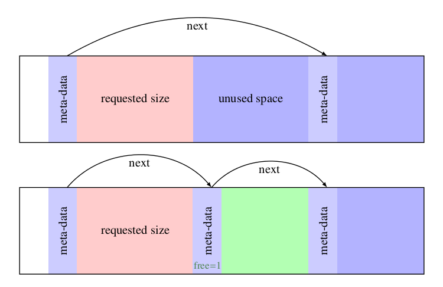

malloc free函数的实现
基础信息
malloc 管理的空间不一定是连续的，因为程序中的某些地方可能不通过 malloc 调用申请空间。所以空闲存储空间是以空闲块链表的方式组织的，每个块包含一个长度、一个指向下一块的指针以及一个指向自身存储空间的指针。并且按张存储地址的升序组织，最后一块指向第一块，形成一个循环链表。(K&R 第二版的中文版居然将“in use, owned by malloc”译为不是由 malloc 控制的空间，将“not owned by malloc”译为空闲链表，译者是四级没过吗？)

当有申请请求时，malloc 使用首次适配算法扫描空闲块链表，找到第一个足够大的块时就返回。首先搜索空闲块链表，以找到一个能够插入空闲块的合适位置。除了首次适配算法之外，还有最佳适配算法等。但是最佳适配算法比首次适配算法更加复杂，同时因为每次调用最佳适配算法都要搜索整个链表，所以它比首次适配算法慢，而且还会浪费更多内存，因为它会产生大量无用的小空闲区。
我们还需要确保由 malloc 返回的储存空间能够满足将要保存对象的对齐要求。虽然机器类型各异，但是每个机器都有一个最受限的类型，如果最受限的类型可以存储在一个特定的地址中，则其他所有的类型也都可以存放在这个地址中。在这里我们假定最受限制的类型为 long。
位于空闲块开始处的控制信息称为头部。为了简化块的对齐，所有的块的大小都必须是头部大小的整数倍，且头部已经正确对齐。具体实现如下，注意 Align 字段永远不会被使用，它仅仅用于强制每个头部在对坏的情况下满足对其要求：
typedef long Align; //按照long类型的边界对齐 union header { struct { union header *ptr; //空闲链表中的下一块 unsigned size; //本块的大小 } s; Align x; }; typedef union header Header;
另外还有一个需要注意的地方是，在此处省略了指向空闲空间本身的指针，其实是使用 header 本身的地址来指向空闲存储空间，因为 header 是空闲块的头部，header 的地址就是空闲存储空间的首地址。
在 malloc 函数中，请求的长度（以字符为单位）将被舍入，以保证头部大小的整数倍。实际分配的块将多包含一个单元，用于头部本身。malloc 函数返回的指针指向空闲空间，而不是块的头部。
（图片丢失）
malloc 函数
变量 base 表示空闲块的头部。第一次调用 malloc 函数时，freep 为 NULL，系统创建一个退化的空闲块链表。每次搜索空闲链表时都从上一次找到空闲块的地方(freep)开始，该策略可以保证链表是均匀的。如果找到的块太大，则将其尾部返回给用户，这样初始空闲块的头部只需要修改 size 即可。在任何情况下，返回给用户的指针都指向块内的空闲存储空间，即比指向头部的指针大一个单元。
static Header base; //从空链表开始
static Header *freep = NULL; //空闲链表的初始指针
void *
malloc(unsigned nbytes)
{
Header *p, *prevp;
Header *morecore(unsigned); //现在很少使用这种声明函数的方式了
unsigned nunits;
//以头部的大小为最小单位来计算应该申请的空间大小。
/*
* nbytes + sizeof(Header) -1中的-1是为了避免当
* nbytes + sizeof(Header)恰好为sizeof(Header)的
* 整数倍时多分配一个单元。
*/
nunits; = (nbytes + sizeof(Header) -1) / sizeof(Header) + 1;
if ((prevp = freep) == NULL) { //没有空闲链表
base.s.ptr = freep = prevp = &base;
base.s.size = 0;
}
for (p = prevp->s.ptr; ; prevp = p, p = p->s.ptr) {
if (p->s.size >= nunits) { //足够大
if (p->s.size == nunits) //正好
prevp->s.ptr = p->s.ptr;
else { //分配末尾部分
p->s.size -= nunits;
p += p->s.size; //调整p指向返回的空闲块
p->s.size = nunits;
}
freep = prevp; //下次搜索从上次找到空闲块的位置开始
return (void *)(p+1); //跳过头部，返回空闲空间
}
if (p == freep) //遍历了整个链表
if ((p = morecore(nunits)) == NULL)
return NULL; //没有剩余的存储空间
}
}
morecore 函数
函数 morecore 用于向操作系统请求存储空间，其实现细节因操作系统不同而不同。因为向操作系统请求存储空间是一个很大的开销，所以我们不希望每次调用 malloc 都执行该操作，而是一次至少申请 NALLOC 个单元。在设置完 size 字段后，morecore 调用 free 函数把申请的存储空间插入到空闲块链表中。
在 Unix-like 系统中，morecore 使用 sbrk(n)系统调用，改变进程的数据段尾地址(program break)，将程序的数组存储空间增加 n 个 bytes，并返回未调用 sbrk 之前的 program break 地址。详细信息使用 linux 的朋友可以 man sbrk。如果没有空闲空间，sbrk 将返回-1，我们需要将-1 强制转换为 char *类型，以便与返回值比较。注意这里假定由 sbrk 调用返回的指向不同块的多个指针之间可以进行有意义的比较，但 ANSI 并没有保证这一点，所以只有在一般指针间的比较操作有意义的机器上，该版本 malloc 函数才能偶移植。
#define NALLOC 1024 //最小申请单元数 static Header * morecore(unsigned nu) { char *cp, *sbrk(int); Header *up; if (nu < NALLOC) nu = NALLOC; cp = sbrk(nu * sizeof(Header)); if (cp == (char *) -1) return NULL; up = (Header *) cp; //设置空闲块头部 up->size = nu; free((void *)(up + 1)); return freep; }
free 函数
free 函数从 freep 指向的地址开始，逐个扫描空闲块链表，寻找可以插入空闲块的地方。该位置可能在两个空闲块之间，也可能在链表的开头或末尾。如果被释放的块与另一个空闲块相邻，则我们将这两个空闲块合并起来。合并操作很简单，只需要设置指针指向正确的位置并更新块大小。
void
free(void *ap)
{
Header *bp, *p;
bp = (Header *)ap - 1; //指向块头部
//根据bp的地址寻找bp空闲块应该插入的正确位置(原来在空闲块链表中位置？)
for (p = freep; !(bp > p && bp < p->s.ptr); p = p->s.ptr)
if (p >= p->s.ptr && (bp > p || bp < p->s.ptr))
break; //被释放的块在链表的开头或末尾
if (bp + bp->s.size == p->s.ptr) { //与下一个相邻块合并
bp->s.size += p->s.ptr->s.size;
bp->s.ptr = p->s.ptr->s.ptr;
} else
bp->s.ptr = p->s.ptr;
if (p + p->s.size == bp) { //与上一个相邻块合并
p->s.size += bp->s.size;
p->s.ptr = bp->s.ptr;
} else
p->s.ptr = bp;
freep = p;
}
再次怀疑译者 4 级没过，“join to upper nbr”直译为与上一相邻块合并，“join to low nbr”直译为与下一相邻块合并，实际这里的 upper 和 low 指的是地址的高和低，正确的应译为下和上，因为高地址在链表的下一空闲块中，低地址在链表的上一空闲块中，链表是按照存储地址的升序排列的。
参考：《C 程序设计语言》(K&R)